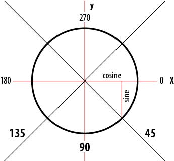
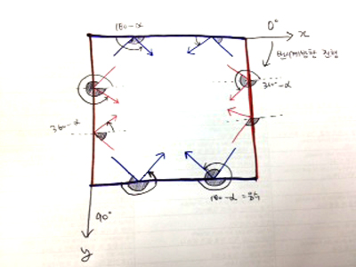
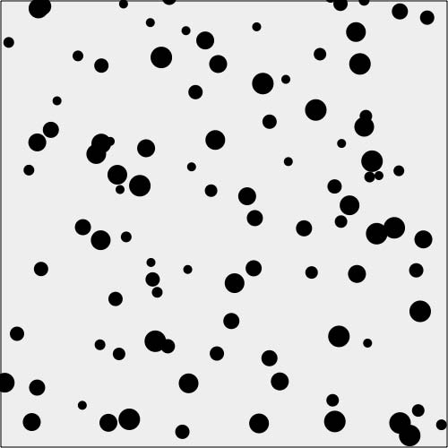
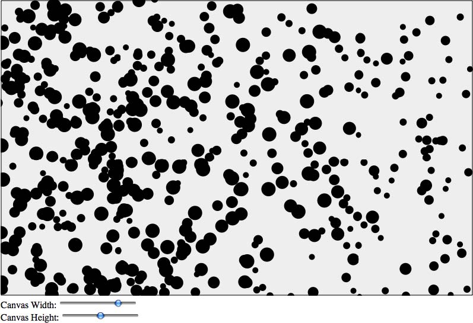
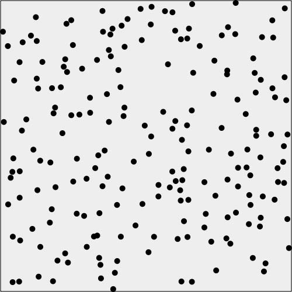
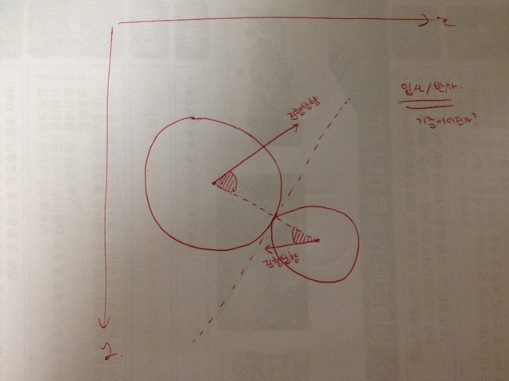

- 사각형 캔버스에 테두리를 두르고, x,y좌표를 더해가며 setInterval 찍어서 그렸음.
- strokeStyle의 가로/세로를 -2 해주는건 선굵기를 감안해서 canvas 안에 테두리가 보이게 하려는 것.
-
context.arc(x, y, radius, startAngle, endAngle, anticlockwise)
context.arc(x좌표, y좌표, 반지름, 시작각-호의길이로 표시, 끝각-호의길이로 표시, 그리는 방향)
endAngle(끝각)을 Math.PI*2 == Math.PI/180 * 360 == 360도 각도에 대한 라디안 == 원주 전체
context.arc(x,y,15,0,Math.PI*2,true);
== 반지름이 15인, 반시계방향으로 그려진 원!
- 직각 삼각형의 "직각에 인접한 두변의 제곱의 합"은 "빗변의 제곱"과 같다.
-
pointImage :궤적을 그릴 이미지

-
move = distance / speed = 이동할 횟수. 속도가 빠르면 두세번만에 이동하고, 속도가 느리면 같은 거리도 열번에 걸쳐 이동하게 하는 것.
distance = 두점사이의 거리 = Math.sqrt(dx*dx + dy*dy)
speed = 속도 = 5
-
points : 이동 궤적을 찍을 모든 좌표 세트(x,y)를 가진 배열.
x = ball.x += xunits // 이동 횟수 X 단위거리. = 현재 공의 좌표
xunits = (p2.x - p1.x)/moves = 한번에 이동할 단위거리 = 출발점과 도착점 사이를 이동할 횟수로 나눈 값
p1, p2 : 출발점, 도착점 좌표
-
궤적 : context.drawImage(pointImage, points[i].x-15, points[i].y-15,30,30);
현재 공의 좌표를 기준으로 30x30 크기로 궤적용 이미지를 그려라. 원 찍히는 부분이랑 궤적이랑 출발 점을 맞추려고, 원의 반지름 만큼을 x,y 시작 좌표에서 뺐음!!
-
"출발점" 부터 "어느 방향"으로 이동시키겠다!
반지름을 늘려가면서 원을 그리는데, 특정 각도 만큼 간데서 계속 점을 찍으면 결국 그 점들이 방향을 가진 직선이 됨.
-
points : 이동 궤적을 찍을 모든 좌표 세트(x,y)를 가진 배열.
x = ball.x += xunits // 이동 횟수 X 단위거리. = 현재 공의 좌표
xunits = Math.cos(radians) * speed = 한번에 이동할 단위거리 = 출발점과 도착점 사이를 이동할 횟수로 나눈 값
p1, p2 : 출발점, 도착점 좌표
-
Math.cos(radians) * speed
radians = angle * Math.PI/ 180; = 각도 만큼 반지름 1인 원을 그렸을 때 호의 길이. 180도면 3.14.., 360도면 6.28..
xunits = Math.cos(radians) * speed; = speed가 반지름이라고 생각하면 쉬움.
Math.cos(radians) = 원위에서 라디안만큼 이동했을때 x 좌표
cosα = 원 위에서 α만큼 이동했을 때, 그 점의 X 좌표값. cos0 = 1, cos180 = -1
sinα = 원 위에서 α만큼 이동했을 때, 그 점의 Y 좌표값. sin90 = 1, sin 270 = -1
* 좌표계가 하단으로 우측하단으로 증가하므로 호의 각도를 계산할때 반시계 방향을 기준으로 계산해야 한다.

-
산출공식
원주(2πr) : 호의 길이(라디안) = 360도 : 각도
==> 호의 길이(라디안) * 360도 = 각도 * 2πr
==> 호의 길이(라디안) = 각도 * 2πr / 360도 //// (r(반지름) = 1 이라고 가정)
==> 호의 길이(라디안) = 각도 * π / 180도
-
라디안(radian) = 호의 길이만큼 이동한 좌표(방향) 과
라디어스(radius) = 반지름
헷갈리지 말 것!!
-
X축 벽에 부딪히면 180도 - 입사각도
Y축 벽에 부딪히면 360도 - 입사각도!!
(이거 알면 끝!) - 
-
페이지 로딩할 때 updateBall()을 한번 실행하므로, 첫 지정한 방향으로 스타트가 된다.
이후 셋인터벌로 찍을때 마다 벽까지 갔는지를 체크하여 angle을 바꿔준다.
if (ball.x > theCanvas.width || ball.x < 0 ) { angle = 180 - angle; updateBall();}
캔버스를 벗어나려하면 updateBall() 실행! 방향을 바꾼다! -
cosα = 원 위에서 α만큼 이동했을 때, 그 점의 X 좌표값. cos0 = 1, cos180 = -1
sinα = 원 위에서 α만큼 이동했을 때, 그 점의 Y 좌표값. sin90 = 1, sin 270 = -1
- 벽에 튕길 때 원의 중심을 기준으로 계산되고있어서, 공이 벽으로 먹어들어간다.
- 5_4와 동일한데, 공을 배열로 여러개 만들어서 찍었다.
- 
-
1. 배열로 만들어진 공(balls)을 for 문이 돌면서 지정된 첫 위치에 그린다.
2. tempBall생성. 반지름, 속도등을 기존 설정값에 Math.random() 함수를 곱해서 랜덤 값을 설정.
3. balls 배열에 tempBall를 push하여 각각 다른 ball 설정을 가진 balls 배열을 만든다. - balls 배열을 아래에서 생성하는데, balls에 대한 for문이 위에서 돈다. 이건 괜찮은건지?? --> 이해가 안됨;;
- 5_5와 동일한데, 벽까지의 거리가 가변되게 하였다.
- 
- 이걸 왜 예제에 넣었는지 잘 모르겠음;;;
-
drawScreen()에서 사각형을 그리고
공들을 자리배치를 한다.
- placeOK함수로 서로 부딪히지않도록 canStartHere()로 체크하여,
- 시작좌표는 랜덤생성,
- 방향 랜덤생성,
- 반지름 5인 구 생성,
- 속도 4로 기본 설정,
- 질량(=반지름)으로 설정.
그 후 setInterval()로,
1. update() : 모든 공의 다음 턴에 이동할 좌표를 계산하고,
2. testWalls() : 공이 벽에 부딪히는게 있다면 그것만 방향을 다시 계산하고,
3. collide() : 서로 충돌하는 공이 있다면 그것만 방향, 속도를 다시 계산하고,
4. render() : 최종 그린다.
를 순차로 실행한다.
- 
-
update() : 모든 공의 다음 턴에 이동할 좌표를 계산.
- 현재 공의 좌표에 틱당 속도에 해당하는 거리를 더해서 다음좌표를 계산한다.
- balls 배열의 값 개수만큼(공의 개수만큼)반복한다.
--> 모든 공의 다음 좌표 계산!!
-
testWalls() : 공이 벽에 부딪히는게 있다면 그것만 방향을 다시 계산.
- 공의 다음 좌표가 캔버스 너비 또는 높이를 벗어나면, 속도값에 -1을 곱해서 방향을 반대로 만든다.
- 그 후, 공의 다음 좌표를 벽에 부딪히는 그 좌표로 설정한다.(그 다음틱에 방향이 반대라서 캔버스 안쪽으로 좌표가 잡힌다.)
- 현재 공의 좌표(ball.nextx)에 공의 반지름(ball.radius)을 더해서, 공 중앙이 아니라, 공 끝이 벽에 부딪혀도 튕겨나오도록 설정한다.
--> 공 돌려세우기.(뒤로 돌앗!)
-
collide() : 서로 충돌하는 공이 있다면 그것만 방향, 속도를 다시 계산.
- testBall는 계산을 위한 임시 변수.
- 모든 공에 대해 모든 공을 for문을 돌려(각 공간의 모든 경우의 수 계산), hitTestCircle() 이 true면 충돌이 일어났다고 보고, collideBalls() 실행한다.
- hitTestCircle() : x^2 + y^2 = z^2 공식을 이용해 두 공 사이의 거리를 구하고, 그 값이 각 공의 반지름의 합보다 작으면 충돌이 일어난것으로 본다.
-


- collideBalls() : 두 공의 진행방향을, 접점의 법선벡터를 기준으로 반사시킨다. -
render() : 최종 그린다.
-
다른함수에서는 다 var ball로 선언을 하는데, update()에서만 안함. 상관없는건지?@@
------------------- collisionAngle : 두 공의 중점을 이은 선의 벡터(각도). 이 벡터를 기준으로 진행방향을 반사시킨다.
------------------- speed : 공이 진행하던 속도. x^2 + y^2 = z^2 공식 쓰고, Math.sqrt()로 제곱근 계산해서 순수한 속도의 크기를 구한다.
------------------- velocityx_1 : 진행방향에서 collisionAngle 각도를 빼줌으로써 반사시킨 각도 값을 얻는다. 거기에 cos,sin 계산으로 x,y 길이를 구한다.
------------------- final_velocityx_1 : 운동량 보존의 법칙(작용.반작용의 법칙)으로 인해 둘사이에 속도*질량으로 발생하는 힘의 합을 둘이 나눠가진다.
- Math.atan2(y,x) : 아크탄젠트 함수로, y,x 좌료를 입력하면 각도를 라디안으로 반환한다.
- 5_7과 동일한데, 공 크기가 다르다.